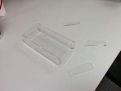

The TOL Menace
In a galaxy near, near here, three TOL students decided to take on the 3D Fabrication and Prototyping course...
Attack of the Spiders
Initially we had this creepy idea of a sixlegged spider with a baby doll’s head. We thought the idea was interesting in terms of realization. Especially the leg programming logic could have been cool. We started by modeling the servo and the base for it.
Revenge of the Spider
After the initial work, we had a couple week’s break due to workload from other courses. Revisiting the idea, we arrived at the conclusion the current plan was too complicated and timeconsuming to make in time.
A New Design
Having scratched the first idea, we began thinking about a new one. We still wanted something special, so we decided to include the possibility of moving the new robot, whatever it would be, via an Android application. After a lot of back and forth we decided to make a tank for our prototype. It would feature a turning tank gun implemented with a servo, and tank treads moving the tank. For extra features we thought about a LED at the end of the tank’s gun. It would flash when a shooting button would be pressed on the Android application. A piezo would play a sound at the same time.
Initial sketching above. We started by drawing the bottom panel in a 1:1 scale to try and figure a preferred size.
Side view sketch above, with modifications added later (tyres; see next chapter). The gun tower would rotate and the top panel would be easily removable to ease access to the electrical components. Problems arose when we started thinking about the front and back panels, and how to connect all of them. Some solution ideas follow.
With this we could lock the parts together easily with no need for glue.
Another, flawed, idea.
We met multiple times and continued modeling on SolidWorks. Finally, we came to an almost finished design seen below.
The Despair Strikes Back
A fully featured tank would have been too much. The deadline getting ever closer, we decided to simplify our design. First, we dropped the idea of tank tread, the little parts being too timeconsuming to make and combine. Second, we abandoned the idea of the LED mounted in the gun. Instead of the tank treads, we decide to make tyres based on initial sketching seen below. We decided to focus on doing as much with laser cut pieces as possible, as that is really quite bit faster than 3d printing most of the frame, as we initially planned.
The work continued and everything seemed to go somewhat well. To handle the front and back panel problem we had earlier we decided to make the connecting panels’ edges sloped with glue holding them together. Seen below are the second laser cut parts, with a video of the process.
Everything was well until we 3D printed the first parts.
This is the bottom half of the gun tower. The servo should have been mounted on this, but alas, the servo didn’t fit. Back to the drawing board for slight adjustments. Luckily, it was merely a factor of widening the hole the servo was mounted on slightly. We also had a bit of a problem with our sloped tank frame parts. Since they were laser cut, we had to file them down or something. In the end, it was just too bothersome and took time away from rest of the work so we just abandoned that stuff. Open spaces are good for cooling as well.
Assembling the board was going quite well, with our soldering grandmaster Topi teaching the rest of the group. Having proper equipment was really handy for soldering and things proceeded well. We had to do a few resolders due to some slightly greedy connections, but nothing major. Our schematics can be seen below.
The top half of the gun tower. Problems with servo not being able to rotate with this. We had to adjust the height of the empty inner space to allow for proper room for the servo.
The Return of the Success
In the end we made it. The parts are together and the code works. Final assembly seen below. We had to scale down our expectations as we couldn't line up schedules due to work schedules. Our final product uses the old frame, rotating a servo, with a depth sensor designed to detect movement. The idea is to let the bot wave the cannon around and shut it down with your hand. Very minimalistic and avant-garde. Video can be seen below.

Assembly instructions
Required parts
- Arduino
Instructions
- Laser cut parts
- 3d print parts